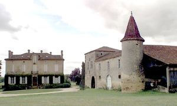
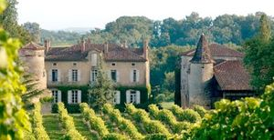
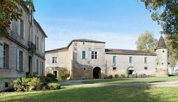
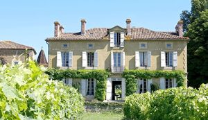
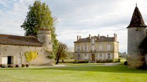
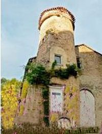

Recensement Jean-Claude Truffet
| Département | 32 — Gers |
| Canton | Nogaro |
| Commune | Mauléon d |
| Type d'édifice | Château |
| Période d'origine | XVI |






MAULEON-MANIBAN, fut construit au XVIe siècle à la demande de Pierre la Bassa de Mauléon, qui vers 1544 prit le nom de Maniban. Puis, le château cessa dêtre habité de façon permanente. Après la construction par Thomas, troisième Maniban du nom. Le château de Maniban a appartenu ensuite à son fils, Jean Guy de Maniban, au XVIIe siècle puis à son fils, Gaspard de Maniban au XVIIIe siècle, tous les deux présidents du Parlement de Toulouse. A la mort de Gaspard, vers 1762, sa fille, Marie Christine de Maniban, épouse du Marquis de Livry, premier maître dhôtel de Louis XV, reprit le flambeau. Cette position lui permit de faire déguster au roi Louis XV lArmagnac qui entra ainsi à la Cour de France. Habitant à la Cour de France à Versailles, elle revenait pourtant tous les étés dans ses deux propriétés du Gers. Elle avait une affection particulière pour celle de Mauléon dArmagnac dans le Bas-Armagnac, berceau de sa famille, Aujourdhui le domaine de Maniban appartient à la famille Castarède, installée dans le Bas-Armagnac depuis des siècles et qui produit lArmagnac éponyme. La famille Castarède a découvert dans un des bâtiments, des fresques historiques qui ont été restaurées. Le château de Maniban et ses propriétés alentour furent reprises par ses cousins Campistron de Maniban.
le château de Maniban localisé en Ténarèze, à Mausencôme, sur ce domaine a été construit une maison de maître au XIXe siècle, perpendiculaire au château du XVIe siècle. Ces fresques pourraient représenter un épisode heureux de la vie des propriétaires de Maniban, de fiançailles ou plus probablement, dun mariage. Ce décor peint doit être attribué à un peintre décorateur, sans doute italien, du XVIe siècle. Château du XIVe siècle, formé de trois bâtiments distincts autour d'une cour. A l'est se trouve le chai dont la toiture est supportée par deux rangées de piliers en bois. Une tour ronde à la base carrée en flanque la façade. A l'ouest, le bâtiment ancien a été prolongé au sud et au nord par des éléments plus récents. Le quatrième côté de la cour est protégé par un mur crénelé, flanqué au nord d'une tour ronde percée de meurtrières. Le château semble avoir été rebâti au cours du XVIIe siècle, sur un donjon ou une salle gasconne plus ancienne. Au premier étage, une grande salle située au-dessus de la chapelle conserve des peintures murales de la fin du XVe-début XVIe siècle, influencées par l'Ile-de-France. De part et d'autre des deux fenêtres à meneaux sont peints des couples sous des rideaux ocres. Une cariatide nue parée de tresses, avec une couronne de feuillage à la taille, enrichit le décor d'architecture. Une frise ornée de putti court au niveau du premier étage. Dans l'angle nord-ouest on retrouve ce même motif enrichi d'un arbre à feuillage exotique.
Famille de Pierre la Bassa famille Castarède
"
Château de Mauléon-Maniban et le manoir